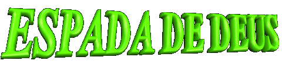
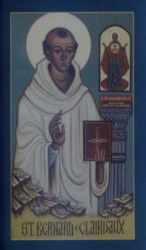
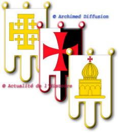
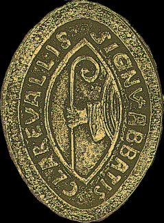
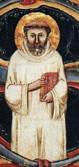
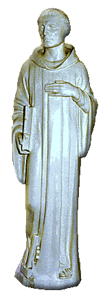
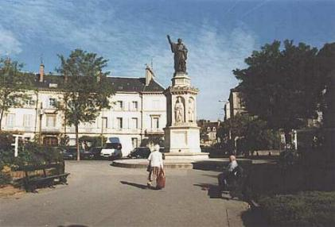

 DIVULGADOR DA SEGUNDA
CRUZADA - Em razão de suas múltiplas
DIVULGADOR DA SEGUNDA
CRUZADA - Em razão de suas múltiplas
atividades,
como sua vigilância constante e laboriosa em benefício da Igreja, a maneira sincera e
cristã de resolver um problema ou contornar uma dificuldade, fizeram com que ele fosse
amado, respeitado por todos e carinhosamente recebesse o apelido de "Doutor Melífluo"
e também “Abelha da França"
. Recebeu ainda a alcunha de
“Espada de DEUS”, pelo empenho em despertar as pessoas
para fugirem das más inclinações e do torpor da indiferença para com DEUS, e também,
de seu trabalho e das obras em benefício da Segunda Cruzada contra os Otomanos. Os
turcos tinham fechado o acesso por onde os cristãos passavam para visitar os Lugares
Santos em Jerusalém e em outras cidades da Palestina, o que causou uma enérgica
reação e uma natural revolta em toda cristandade.
Conseguiu dominar de tal modo o mundo com
o poder de suas virtudes, gênio e caráter, que dificuldades de todos os gêneros lhe
eram apresentadas para que encontrasse solução, as quais resolvia com humildade,
sabedoria e firmeza, sempre com um elevado sentido de Glorificar a DEUS.
 Durante o ano 1144, recebeu do Patriarca
de Jerusalém uma relíquia extraordinária. Um pedaço da verdadeira Cruz, onde
JESUS morreu, acompanhada de uma carta-solicitação, para construir uma
colônia de monges na Palestina.
Durante o ano 1144, recebeu do Patriarca
de Jerusalém uma relíquia extraordinária. Um pedaço da verdadeira Cruz, onde
JESUS morreu, acompanhada de uma carta-solicitação, para construir uma
colônia de monges na Palestina.
Bernardo agradeceu a lembrança e o convite,
e ponderou a respeito da situação dos cristãos que viviam por lá, que era por
demais insegura, em face das guerras e obstinação dos turcos, em querer acabar
com os cristãos. Na verdade eles precisavam mais de soldados do que de monges.
No entanto, o local proposto pelo Patriarca
de Jerusalém, foi por sua sugestão, concedido aos premonstratenses.
Com a ocupação militar do Condado de
Edessa pelos sarracenos, no ano 1144 voltou a imperar a lei dos turcos de não
deixarem os cristãos visitar os Lugares Santos.
A partir de 1145, todas as tentativas possíveis
foram feitas, no sentido de se conseguir uma solução pacífica para
o impasse, contudo sem qualquer resultado prático, porque os otomanos
queriam mesmo era acabar com os fiéis da Cruz.
conseguir uma solução pacífica para
o impasse, contudo sem qualquer resultado prático, porque os otomanos
queriam mesmo era acabar com os fiéis da Cruz.
Nesta época, o Papa Eugênio III que sucedera ao
Papa Lúcio II no trono de São Pedro, resolveu tomar o patrocínio do caso para
resolvê-lo, nem que fosse por meio das armas.
Nomeou o Abade para seu principal pregador e
incentivador, a fim de que com sua oratória admirável, conseguisse
sensibilizar o mundo cristão e preparar um grande exército para destruir os
turcos.
Desta forma nasceu a SEGUNDA CRUZADA.
O Santo iniciou sua missão no dia 31 de março de
1146, num domingo de Ramos. Neste dia memorável em Vézelay, na Borgonha,
dirigiu-se a uma enorme multidão, estando presente o jovem Luís, Rei da França,
a Rainha, a fina flor da nobreza e grande número de prelados.

De maneira brilhante exortou a cavalaria
da França e de toda Europa a empreender a batalha contra o inimigo de CRISTO.
Ao final de hora e meia de pregação, a população sensibilizada gritava
entusiasticamente: "A Cruz! A Cruz!
DEUS o quer"!
Foi um triunfo sem precedentes. A Rainha foi a
primeira a ajoelhar-se aos pés do Abade para receber a Cruz Vermelha, o símbolo
que todos os Cruzados levavam no peito. Seguiram o irmão, o tio do Rei, os
Nobres com suas esposas e numerosos Bispos. O Rei já tinha recebido a sua Cruz
diretamente do Papa Eugênio III.
Durante as semanas seguintes, com
ardor, ocupou-se em pregar a Cruzada nas principais cidades das diversas províncias
francesas. E desta forma, cada vez mais aumentava a sua área de influência.
Onde sua voz não alcançava, enviava exortações escritas. Foi assim que
expediu muitas mensagens para a Grécia, Itália, Espanha, Polônia, Dinamarca,
Moravia, Bavária, Sicília e Inglaterra.
Na véspera do Natal de 1146, acompanhado de
outros religiosos, chegou à cidade
alemã de Spires, onde no dia da comemoração
do NATAL (Nascimento de NOSSO SENHOR JESUS CRISTO), ia reunir uma dieta
geral de Bispos e Nobres da Alemanha, para a cerimônia da coroação de Conrado,
ocasião também em que seriam estudadas medidas e acordos para colocar a paz no
Império Teuto. E o Santo não queria perder aquela rara oportunidade de pregar a
"Guerra contra os Muçulmanos", a toda nobreza alemã ali reunida.
Conseguiu convencer o Imperador Conrado e
a nobreza alemã a tomarem parte na Segunda Cruzada, apesar das ameaças de guerras
internas, que por fim também deixaram de existir, pela sábia intervenção do Abade.
Dessa forma, estimulados e preparados, os grandes
exércitos da Alemanha e da França enviaram seus contingentes para a Guerra Santa.
Todavia, a Segunda Cruzada não teve o êxito militar
esperado, porque os exércitos cristãos a caminho de Jerusalém, sofreram covardes
emboscadas. Os comandantes cristãos convencidos do grande poderio de suas forças,
cheios de vaidades, subestimaram os adversários, aceitando as artimanhas do Rei
Manuel de Bizâncio, que se dizia aliado dos cristãos, acreditando em suas traiçoeiras
palavras e aceitando os guias que ele forneceu, imaginando que poderiam 
vigiá-los com
facilidade. Todavia, os guias fornecidos pelo Rei eram homens conhecedores daqueles
territórios, espertos e devidamente preparados, mancomunados com os comandantes
gregos e turcos. Por isso, escolheram locais estratégicos para consumar as duas
emboscadas, considerando que as trajetórias dos dois exércitos eram diferentes. E
prepararam toda a trama, sem que os comandantes cristãos percebessem. Dessa
forma, os aliados do Papa caíram em terríveis emboscadas. O valoroso exército
alemão e o notável exército francês foram conduzidos para as mortais armadilhas.
Foi um massacre total, sendo completamente dizimados e mortos, salvando-se
poucas pessoas, com muita dificuldade, que viveram para testemunhar o fato.
A culpa caiu sobre o Abade a quem chamaram
de traidor e muitas outras imprecações, dizendo que ele foi o profeta que enviou para
a morte milhares de cristãos, povoando o mundo de viúvas e órfãos.
Mesmo sendo uma acusação falsa e infundada,
por ser um verdadeiro Santo, sofreu silenciosamente todas as injúrias, sem levantar
a voz para se defender e contestar todas as acusações.
Por outro lado, não se pode generalizar afirmando
que esta Cruzada tenha sido um fracasso completo, porque na verdade, foi por
meio dela e das outras, que a Europa ficou mais unida, a onda do Islamismo foi
finalmente detida e as relações entre o Ocidente e o Oriente tornaram-se mais
amigáveis, estreitas e proveitosas.

ÚLTIMOS ANOS DE VIDA
- Os anos de 1152 e 1153, foram marcados
pelo agravamento da doença de
Bernardo. Sua morte passou a ser esperada em cada dia.
Seus sofrimentos tornaram-se cada vez maiores, à
medida que se aproximava o fim. Dormia com dificuldades e no estômago não
permanecia qualquer alimento. Por recomendação médica era obrigado a beber um
líquido para sustentar-lhe e reanimar as energias, mesmo assim, o fazia com angústia
e esforço.
Em julho de 1153, a notícia da morte do Papa Eugênio
III, seu particular amigo e que também pertencia à mesma Ordem Cisterciense,
aumentou ainda mais o seu desejo de partir deste mundo.
Na manhã de quinta-feira, 20 de agosto de 1153,
pediu o Sagrado Viático e a Extrema Unção. Depois de ter recebido os
Sacramentos, os mais idosos da comunidade reuniram-se ao redor de seu leito e
rogaram-lhe que pedisse permissão a DEUS, para permanecer em companhia deles
por mais algum tempo. A emoção tomou conta daqueles corações piedosos e
amigos, e as lágrimas vieram aos seus olhos. Bernardo exalou o seu último
suspiro às 9 horas da manhã, com 63 anos de idade.
A 18 de janeiro de 1174, o Papa Alexandre III o
incluiu solenemente no catálogo dos Santos e publicou, ao mesmo tempo, a Missa
e o Ofício que ele próprio compusera, para o novo festival.
Esta Missa sofreu modificações em 1201, quando o
Papa Inocêncio III incluiu orações apropriadas e concedeu-lhe o título de "Doctor Egregius"
(Doutor Ilustre).
Após a canonização, os restos sagrados foram
exumados e depositados num lugar 
de repouso provisório, na Igreja de Claraval.
Hoje, a relíquia existente encontra-se em Troyes, na
Catedral da cidade, é um magnificente relicário contendo de um lado, ossos
da cabeça de São Bernardo e do outro lado, ossos da cabeça de São Malaquias,
seu grande amigo.
Estátua de São Bernardo numa
Praça de Dijon.
Também está na Catedral de Troyes, a Bíblia
manuscrita na qual ele tanto estudou. Revela indícios de muito uso e as folhas
que contém o Cântico dos Cânticos, estão particularmente gastas.
Na verdade, as relíquias mais importantes que
ele nos deixou, foram as suas obras preservadas quase intactas. Compreende treze
tratados, 345 sermões e diversos trabalhos, em prosa e verso. Os mais conhecidos
são: "DE CONSIDERATIONE" e "DE OFFICIS
EPISCOPORUM".
Nos trabalhos dedicados a Nossa Senhora,
destacamos: "DE LAUDIBUS VIRGINIS MARIAE", "DE
CONCEPTIONE S. MARIAE", "DE 12 PRAEROGATIVIS B.M.V."
e "SERMO IN NATIVITATE B.M.V.".
FIM
 Próxima Página
Próxima Página
Página Anterior
Retorna ao Índice